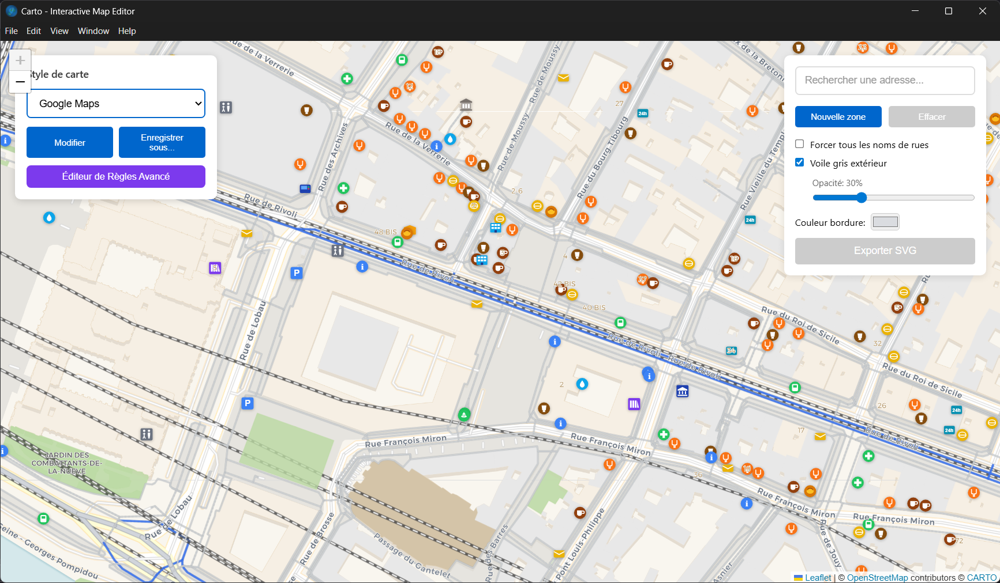

Créez des cartes SVG personnalisées à partir de données OpenStreetMap. Exportez en haute qualité pour l'impression ou l'édition dans Inkscape.
Capture d'écran de l'application

Dessinez des zones de forme libre directement sur la carte. Maintenez Ctrl pour naviguer pendant le dessin.
Choisissez parmi les styles Google Maps, OpenStreetMap, ou créez votre propre palette de couleurs.
Colorez des bâtiments, routes ou espaces naturels un par un. Sélection au clic ou par rectangle.
Fichiers vectoriels avec calques Inkscape séparés : routes, bâtiments, eau, parcs...
Abréviations automatiques (Rue → r., Avenue → av.) et retour à la ligne si nécessaire.
Accès à toutes les données OSM : routes, bâtiments, parcs, cours d'eau, POIs...
Disponible sur Windows, macOS et Linux. Aucune installation requise (version portable).
Choisissez la version correspondant à votre système d'exploitation
Utilisez la barre de recherche pour trouver une adresse, ou naviguez manuellement. Zoomez au niveau 15+ pour charger les données.
Cliquez sur "Nouvelle zone" puis cliquez sur la carte pour ajouter des points. Maintenez Ctrl pour déplacer la carte. Cliquez sur le point vert pour fermer.
Choisissez un thème prédéfini ou modifiez les couleurs de chaque élément : routes, bâtiments, parcs, eau...
Cliquez sur "Exporter SVG" pour générer un fichier vectoriel. Ouvrez-le dans Inkscape pour des modifications avancées.